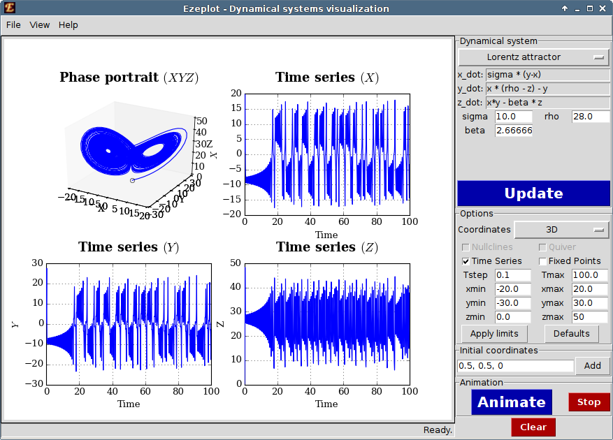
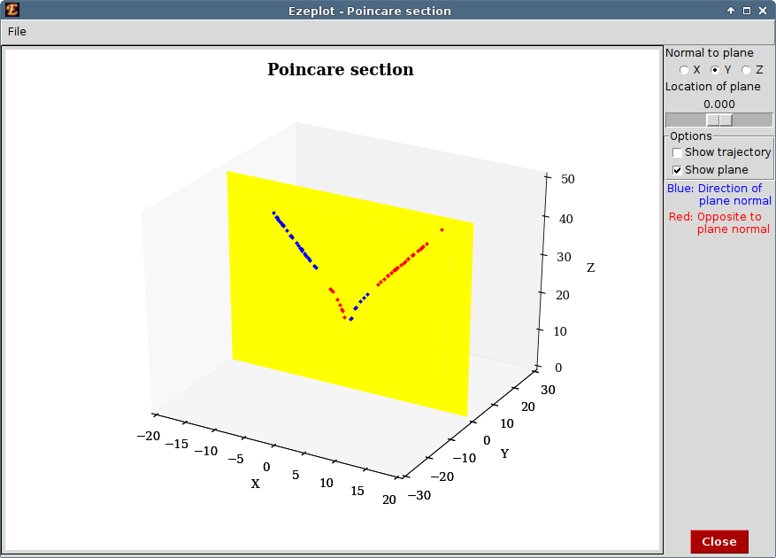

Ezeplot - Dynamical systems visualisation (v1.0.1)
Ezeplot is a tool for visualising autonomous dynamical systems. It can be used as an educational aid for studying non-linear dynamics.
Features
- Plotting and animating trajectories of (1d, 2d, 3d) autonomous dynamical systems
- 2d, 3d and polar modes
- Plotting the nullclines, time-series and direction field
- Detecting fixed points based on user-input
- Plotting Poincare sections
Obtaining and running Ezeplot
Ezeplot is written in Python using the matplotlib plotting library. It should run on any platform that has recent versions of the following packages:
- python (2.7 or 3.4)
- matplotlib (>=1.3.1)
- numpy (>=1.8.1)
- scipy (>=0.13.3)
Fully self-contained standalone package
The standalone package includes Ezeplot bundled along with python and the necessary libraries. This package requires no installation and can also be run from a portable USB flash drive.
Windows (Windows XP or above)
Download ezeplot-windows.zip , extract and run ezeplot.bat
Mac OSX (OSX 10.9 or above)
Download ezeplot-osx.zip , extract and run ezeplot.command
Linux (Kernel 3.0 or above)
Download ezeplot-linux.zip , extract and run ezeplot.sh
Minimal package
The minimal package is very small (< 200KB) and consists of just the Ezeplot program. Download this package if you already have all the dependencies installed on your computer or if you have already downloaded one of the standalone packages and wish to update without redownloading the entire package.
Download ezeplot-minimal.zip and extract.
Executing
You need to open the file __main__.py with your system's python executable.
On Windows, if python is associated with *.py files, opening __main__.py should work.
On Mac OSX and linux, change to the extracted directory, and type (in terminal):
python __main__.py
Alternatively, if you had already downloaded and extracted one of the
standalone packages and are just updating, delete the ezeplot folder from the older installation and copy the newly extracted folder to its place.
Release history
| Version | Date | Description | Download |
|---|---|---|---|
| 1.0.1 | June 7, 2015 | Minor bugfixes | ezeplot-minimal.zip |
| 1.0 | May 31, 2015 | Initial release | ezeplot-1.0-minimal.zip |
Screenshots
|  |  |
{kind=link}
{kind=link}
{kind=link}